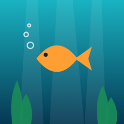

Aquarium ManagerYour planted tank, from your iPhone
Aquarium Manager controls Bluetooth aquarium lights, dosing pumps, heaters and magnetic stirrers directly from your phone. No account, no cloud.
What it does
- Lights: scenes with sunrise and sunset ramps, live manual sliders
- Dosing: schedules with safety limits, calibration, container tracking with low alerts and days left
- Heater: target and an on-device overheat cut-off, live temperature, failsafe, alarms
- Stirrer: timed stir runs and stir now
Works with Chihiros-compatible Bluetooth equipment. Support · Privacy policy · squishybyteworks@gmail.com